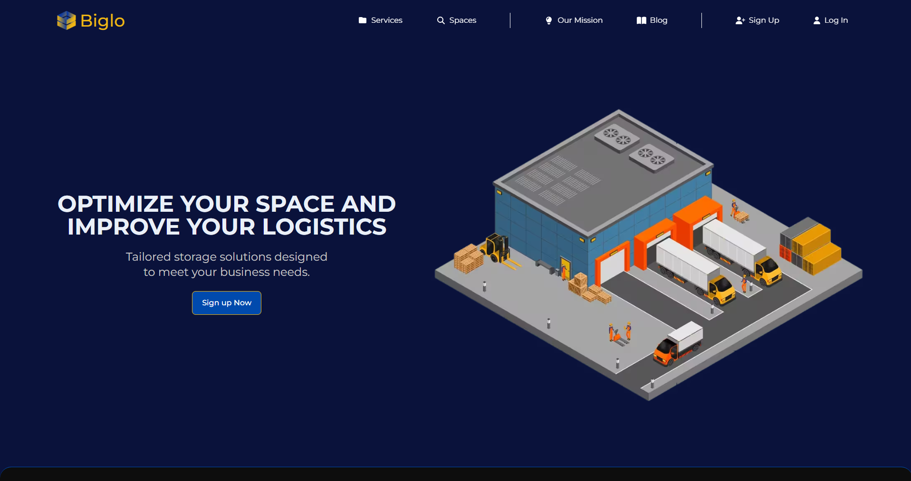
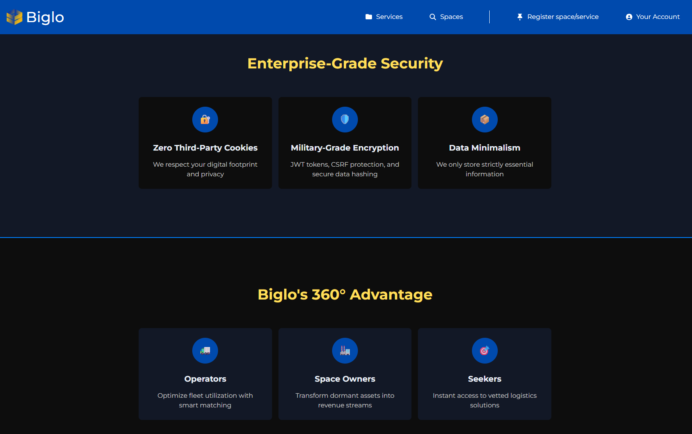
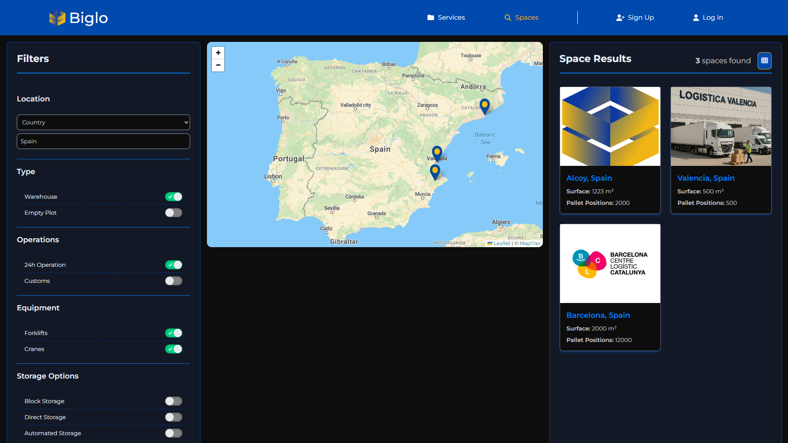
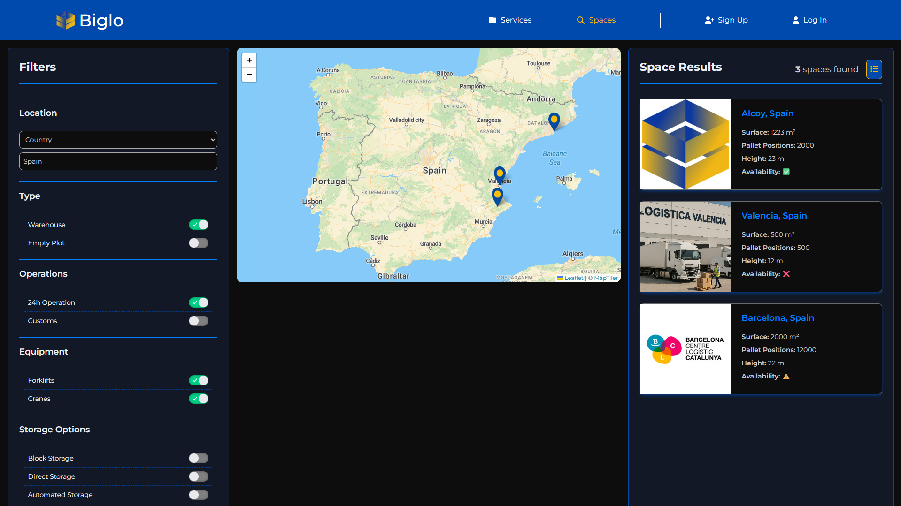
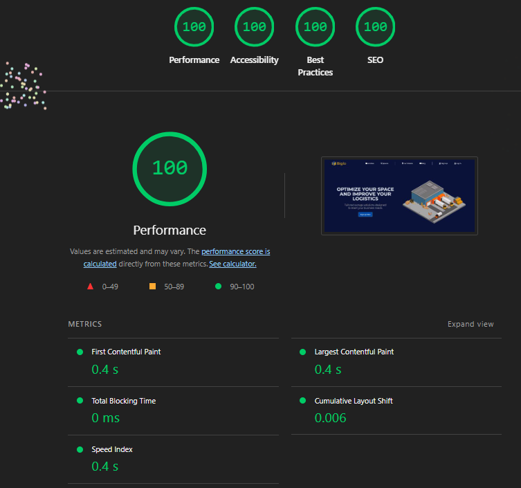
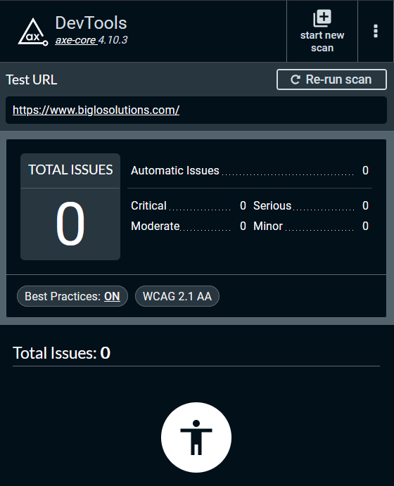
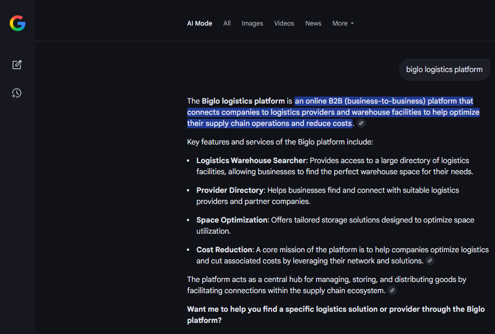

Biglo
A B2B logistics platform that connects companies with the storage and logistics space they need — built end-to-end, with a straight 100/100 in Lighthouse and zero accessibility issues.
cat biglo.md
- stack
- VueNodeTypeScriptMongoDBTailwind
- outcome
- 100 / 100 Lighthouse0 a11y issues
- demo
- biglosolutions.com
Overview
Biglo is a B2B logistics platform that connects three sides of the storage-and-logistics market — logistics operators, warehouse owners, and the companies ("seekers") looking for space or services. The aim was a secure, efficient, modern marketplace where each role gets exactly the tools it needs.
I built it solo and end-to-end — 100% of the project: frontend architecture, the backend API and server design, database modelling, the authentication and security layer, deployment infrastructure, and all of the performance and UX work.







A three-sided marketplace
- Seekers discover operators and warehouses on an interactive map, filter and compare them in grid or list views, and send and track service requests.
- Warehouse owners register and configure warehouses, manage an availability calendar and pricing, and handle documents securely.
- Logistics operators publish services and available space and manage incoming requests from a metrics dashboard.
- Around all three: role-based authentication, secure request workflows, admin oversight, a fully responsive layout and a multilingual (i18n) interface.
Architecture & stack
The frontend is a Vue 3 single-page app — Composition API, Pinia for state, Vue Router and vue-i18n — styled entirely with TailwindCSS and built with Vite. The interactive space search is powered by Leaflet with MapTiler tiles, and Firebase backs supporting client services.
The backend is a Node.js + Express REST API over MongoDB (Mongoose), with Redis and a request-level cache layer for fast repeat queries, Sharp for image optimization, Google Cloud Storage for media, and Nodemailer for transactional email. It runs as a containerized service on Google Cloud Run (images in Artifact Registry), with the frontend deployed on Vercel.
Security
Every sensitive flow was designed security-first: JWT authentication with access and refresh tokens in HTTP-only cookies, bcrypt password hashing, and role-based access control across operators, owners and seekers. Requests pass through Helmet headers, CORS rules, rate limiting, Joi validation and DOMPurify sanitization to close off XSS and injection vectors — and the dependency tree audits clean at zero known vulnerabilities.
Performance & accessibility
Performance and accessibility were constraints from day one, not a finishing pass. Biglo scores a straight 100/100 across Lighthouse Performance, Accessibility, Best Practices and SEO, with zero issues reported by axe DevTools.
- Route-level code splitting and lazy loading to keep the initial bundle small.
- WebP imagery and a Sharp-powered optimization pipeline.
- Redis and request-level caching to cut repeated work.
- Tailwind's JIT for zero unused CSS, plus Vite build optimizations.
- A fully keyboard- and screen-reader-operable, responsive interface.
on pause
Biglo is on stand-by: the frontend is still online as a demo, but the backend is offline, so sign-in and live data won't load. The screenshots and recordings above capture the product as it ran in production.
Next time I revisit it, I want the API back on a cheaper always-on host so the whole flow is walkable again.